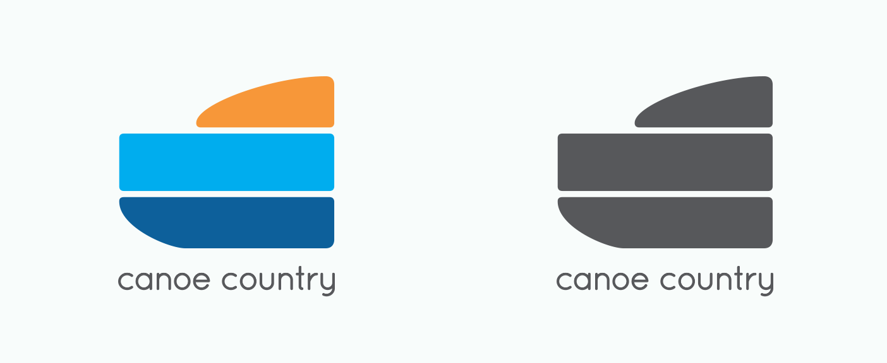
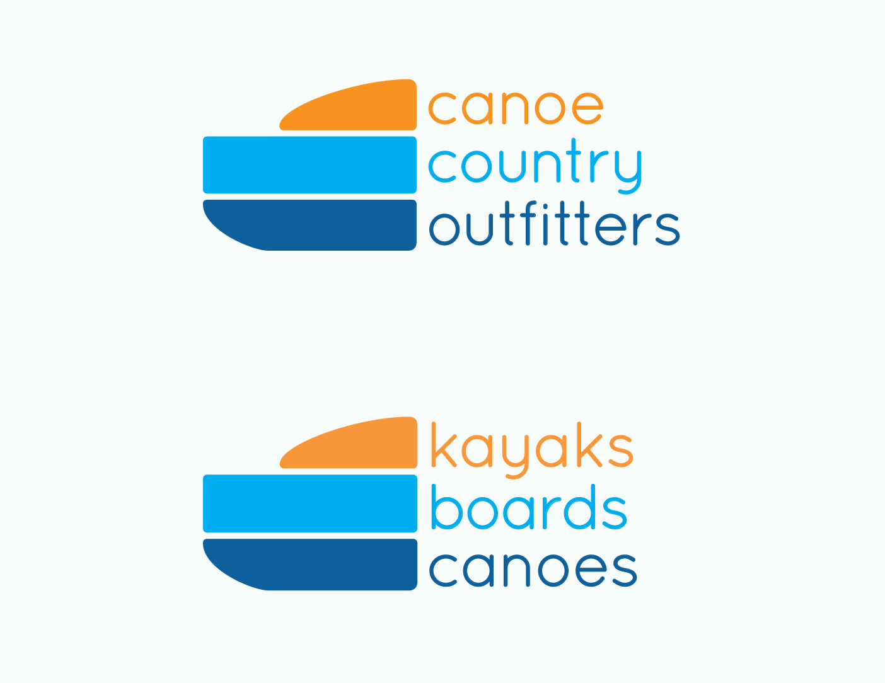
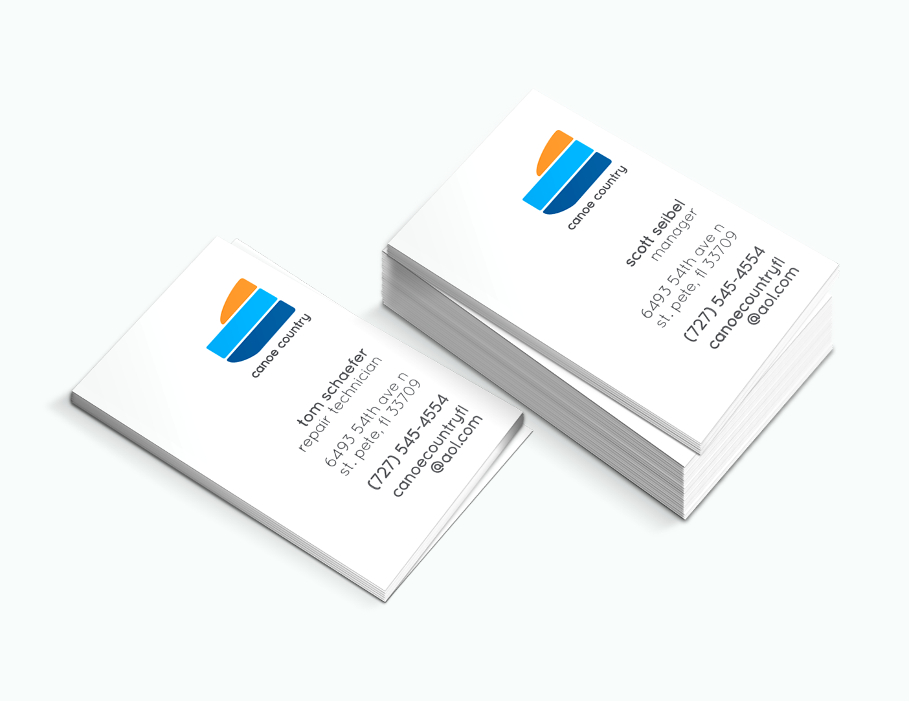
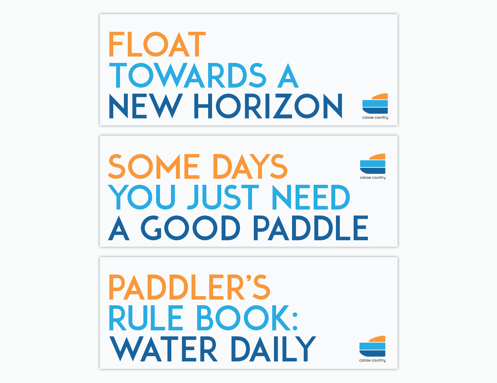
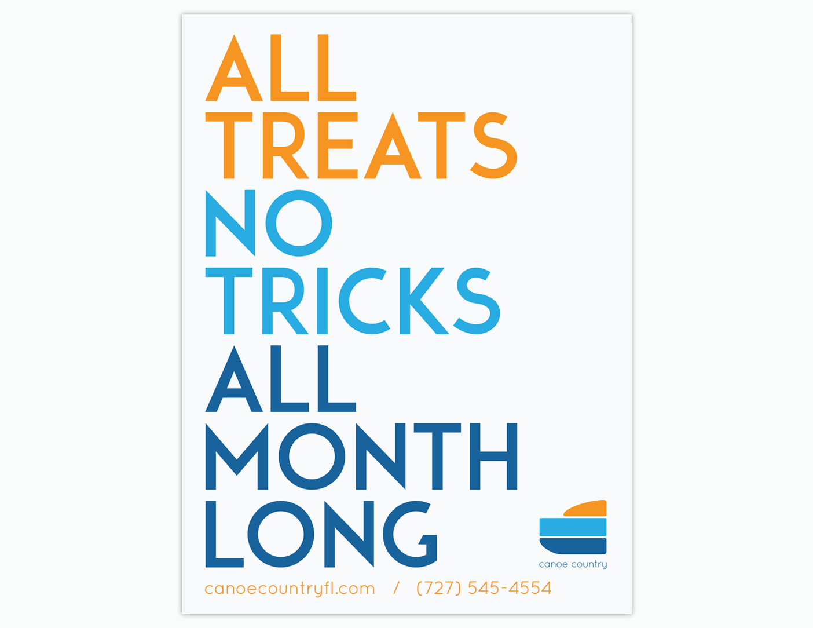
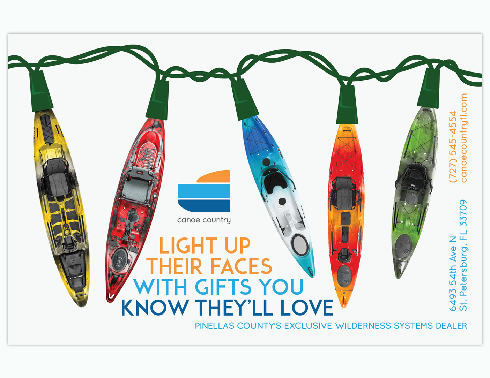

Profile : Canoe Country Outfitters
Below are the results of a case study to re-imagine the identity of Canoe Country Outfitters, a local canoe/kayak shop in St. Pete. The identity centers around the core elements of a paddler’s backdrop: sun, sky, and water. Through the identity, promoting the ideal conditions the sport can bring you to. The bright, joyous memories the sport can introduce. Alternatively, the shapes which construct the mark reflect the three main vessels sold by the shop: kayaks, paddleboards, and canoes.





